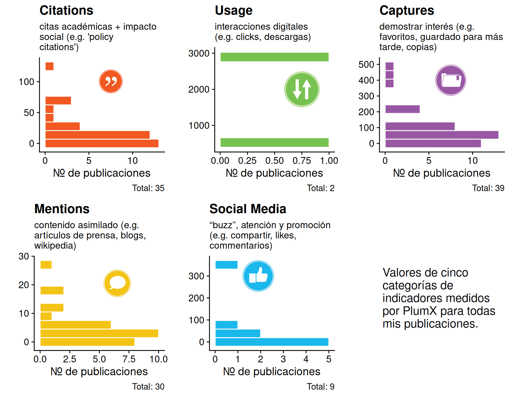

Existen muchas formas de medir el impacto de nuestras actividades científicas. Algunas iniciativas se basan en indicadores cuantitativos derivados de contadores y estadísticas de uso de varias redes sociales y académicas.
Uno de los más famosos proveedores es PlumX.
PlumX registra varios indicadores del uso e impacto de publicaciones. La descripción de las cinco categorías principales se encuentra aquí: https://plumanalytics.com/learn/about-metrics/.
Los valores totales obtenidos para mi lista de publicaciones son los siguientes:
capture
citation
mention
socialMedia
usage
3534
713
140
679
3592
Pero probablemente sea más informativa una presentación gráfica por publicación:

Impacto social
Una forma de medir el impacto social es considerando las citas que reciben los artículos científicos en documentos de normativas y políticas nacionales o globales.
Esta es una lista de mis publicaciones que tienen citas en algún instrumento de políticas globales, según los valores registrados por PlumX.
Ejecutar el código
---title: "Impacto de mis publicaciones"date: 10 Jun 2024editor_options: chunk_output_type: consoleexecute: echo: falseformat: html: code-tools: source: true caption: "Código para cálculos y figuras"---```{r}#| label: setup#| warning: false#| message: falselibrary(forcats)library(tidyr)library(cowplot)library(ggplot2)library(stringr)library(dplyr)library(magick)``````{r}#| label: icons# I found these icons to add to the ploticons_url <-"https://plumanalytics.com/wp-content/uploads/2015/07/"icons <-c(citation ="Metrics_Icons_Citations-150x150.png",capture ="Metrics_Icons_Captures-150x150.png",mention ="Metrics_Icons_Mentions-150x150.png",usage ="Metrics_Icons_Usage.png",socialMedia ="Metrics_Icons_SocialMedia-150x150.png")pngs <-sprintf("%s/%s",icons_url, icons)names(pngs) <-names(icons)``````{r}#! label: Colours# I extracted the dominant colours for these icons using some (image-)magick:clrs <-c()for (nm innames(pngs)) { img <-image_read(pngs[nm]) img_array <-as.integer(img[[1]]) val1 <-as.vector(img_array[,,1]) val2 <-as.vector(img_array[,,2]) val3 <-as.vector(img_array[,,3]) clrs[nm] <-rgb(median(val1[val1<250]),median(val2[val2<250]),median(val3[val3<250]),max=255)}``````{r}#| label: descriptions for the five categoriestexts <-c("citation"="citas académicas + impacto social (e.g. 'policy citations')","usage"="interacciones digitales (e.g. clicks, descargas)","capture"="demostrar interés (e.g. favoritos, guardado para más tarde, copias)","mention"="contenido asimilado (e.g. artículos de prensa, blogs, wikipedia)","socialMedia"="“buzz”, atención y promoción (e.g. compartir, likes, commentarios)")``````{r}#| warning: false#| message: falsehere::i_am("rzrch/impact.qmd")rds_folder <-"data"PMX_ALL <-readRDS(here::here(rds_folder,"plumx_ALL.rds")) |>mutate(doi =tolower(doi))# PMX_ALL |># knitr::kable()```Existen muchas formas de medir el impacto de nuestras actividades científicas. Algunas iniciativas se basan en indicadores cuantitativos derivados de contadores y estadísticas de uso de varias redes sociales y académicas. Uno de los más famosos proveedores es PlumX. PlumX registra varios indicadores del uso e impacto de publicaciones. La descripción de las cinco categorías principales se encuentra aquí: <https://plumanalytics.com/learn/about-metrics/>.Los valores totales obtenidos para mi lista de publicaciones son los siguientes:```{r}PMX_summary <- PMX_ALL |>summarise(across(all_of(c("capture","citation","mention", "socialMedia","usage")), ~sum(.x,na.rm=TRUE)) ) PMX_summary |> knitr::kable()``````{r}PMX_summary <- PMX_summary |>pivot_longer(cols=capture:usage) ``````{r}plotBlock <-function(dts, nm, lbl, xpos, ypos, scl, logy =FALSE) { qnm <-ensym(nm) flt_dts <-filter(dts,!is.na(!!qnm)) P <-ggplot(data = flt_dts) +geom_histogram(aes(y =!!qnm),fill = clrs[nm], bins =10, colour='white' ) +theme(legend.position ="none",title =element_text(color = clrs[nm]),) +theme_half_open() +labs(x ="Nr. de publicaciones", y ="", title = lbl, subtitle =str_wrap(texts[nm],28),caption =sprintf("Total: %s",nrow(flt_dts))) if (logy) { P <- P +scale_y_log10() +draw_image(pngs[nm], x = xpos, y = ypos, scale = scl) } else { P <- P +draw_image(pngs[nm], x = xpos, y = ypos, scale = scl) }return(P)}```Pero probablemente sea más informativa una presentación gráfica por publicación:```{r}b1 <-plotBlock(PMX_ALL, "citation", "Citations", xpos=7, ypos=100, scl=40)b2 <-plotBlock(PMX_ALL, "usage", "Usage", xpos=.25, ypos=2000, scl=1000)b3 <-plotBlock(PMX_ALL, "capture", "Captures", xpos=7, ypos=400, scl=200)b4 <-plotBlock(PMX_ALL, "mention", "Mentions", xpos=6, ypos=20, scl=10)b5 <-plotBlock(PMX_ALL, "socialMedia", "Social Media", xpos=1.4, ypos=300, scl=150)``````{r}b6 <-ggdraw() +draw_label(str_wrap("Valores de cinco categorías de indicadores medidos por PlumX para todas mis publicaciones.",20), hjust =0, x =0.25, color ="#0d0d0f", size =15)``````{r}#| fig-width: 9#| fig-height: 7plot_grid( b1, b2, b3, b4, b5, b6,ncol =3)```## Impacto socialUna forma de medir el impacto social es considerando las citas que reciben los artículos científicos en documentos de normativas y políticas nacionales o globales. Esta es una lista de mis publicaciones que tienen citas en algún instrumento de políticas globales, según los valores registrados por PlumX.```{r}#| eval: falsePMX_ALL |>filter(!is.na(POLICY_CITED_BY_COUNT)) |>select(author_groups, POLICY_CITED_BY_COUNT) |>ggplot() +geom_boxplot(aes(y=POLICY_CITED_BY_COUNT,x=author_groups, fill= author_groups, alpha = author_groups), varwidth =FALSE, width=0.28) +geom_jitter(aes(y=POLICY_CITED_BY_COUNT,x=author_groups), width =0.07, alpha=.35)``````{r}PMX_ALL |>filter(!is.na(POLICY_CITED_BY_COUNT)) |>transmute(DOI =sprintf("<a href='https://doi.org/%1$s'>%1$s</a>", doi), Plumx =sprintf("<a href='https://plu.mx/plum/a/policy_citation?doi=%1$s'>PlumX metrics</a>", doi), `Academic citations`= CITED_BY_COUNT, `Policy citations`= POLICY_CITED_BY_COUNT) |> DT::datatable(rownames =FALSE, escape =FALSE,options =list(dom ='t', order =list(3, 'desc'), pageLength =25))```